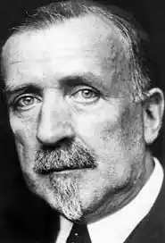

Генріх Манн (1871-1950) – старший брат письменника Томаса Манна, автор, що увійшов в історію німецької та світової літератури передусім як гострий сатирик та автор історичних романів.
Початком його літературної слави став роман "Професор Унрат, або Кінець одного тирана" (1905). Його герой – викладач гімназії, справжній шкільний тиран. Це тип учителя, який весь свій запал скеровує на виховання "вірнопідданих" для кайзера, не терплячи ані найменшого прояву вільнодумства.
Шкільна система, яку добре знав Г.Манн, давно стала закладом для виховання юнацтва у дусі вірнопідданства й безумовного послуху. Не випадково після перемог Німеччини у ряді загарбницьких воєн другої половини 19 ст. широкого поширення набув вираз Бісмарка "війну виграв прусський шкільний учитель". У контексті роману цей вираз звучить однак більш ніж іронічно. Школа, породжена відповідною державною політикою та уособленням якої є вчитель Унрат, була символом прусської казарми. Гімназійний клас, а потім кубло в будинку вчителя – це кайзерська імперія в мініатюрі, імперія, в якій унрати носять своє ім'я як "вінок переможця", творять злочини в ім'я того, щоб можна було сказати "жодної, жодної людини!" Прототипами деяких персонажів, що їх карикатурно змальовує Г.манн у романі, були мешканці рідного міста письменника Любека. Коли роман вийшов у світ, то в Любеку його намагалися заборонити, замовчувати, оскільки ж це не вдалося – нищівно критикували. Очевидно, що чимало з пережитого самим автором під час навчання у гімназії, було автентичним матеріалом, на якому побудований роман. У 1930 р. з'явилася екранізація роману режисером Дж. Штернбергом з назвою "Блакитний ангел", у фільмі знялася Марлен Дітрих. Фільм мав неабиякий успіх та сприяв популяризації роману й самого автора. Тема школи привертала на той час увагу й інших письменників (Т.Манн, Г.Гессе, Е.Штраус), занепокоєних цілеспрямованою підготовкою у навчальних закладах вірнопідданих існуючої системи, майбутніх службистів прусського мілітаризму. Не обмежуючись моральною критикою, антиномією добра і зла, Манн намагається проникнути вглиб самої "системи", виявити приховані пружини розвитку тогочасного суспільства, їхній політико-економічний характер. З особливою силою це знаходить свій вияв у романі "Вірнопідданий" (1914), де суспільні зацікавлення автора здобули художнє втілення у політичній сатирі. "Вірнопідданий" – перший і найбільш досконалий роман трилогії "Імперія". Роман побудований як традиційний роман-біографія, що відтворює обов'язкові віхи життєвого шляху пересічного німецького буржуа: раннє дитинство, гімназія, столичний університет, відхилення від служби в армії, диплом доктора права, одруження з розрахунку, політична кар'єра в провінційних масштабах. Але Манн недарма назвав свого героя Дідеріхом Гесслінгом. Герой і його життя – страшні, вони є типовим породженням Німеччини того часу, у який панував пруссько-юнкерський імперіалізм. Генріх Манн точно передбачив тип фашиста. "Роман зображає попередню стадію розвитку того типу, що потім досяг влади, — писав Манн пізніше. – І лише захоплення й використання влади дозволили цьому типу розкрити повністю свою огидну сутність". Майже за 20 років до того, як це сталося у Німеччині 1933 р. насправді, письменник проникливо побачив цей тип у німецькій дійсності й оголив його духовну ницість. Головні риси Дідеріха Гесслінга – плазування перед сильними й деспотизм стосовно слабкого. Вони природно поєднуються в ньому з жадібністю, зневагою до культури й усякого творчого вияву. Дідеріху не потрібні ні поезія, ні філософія. "Німецький народ, славу богу, більше не народ мислителів і поетів, – самовдоволено стверджує Гесслінг, – він прагне до сучасних практичних цілей… щирий німець – насамперед людина справи". Крок за кроком простежує автор життєву історію Дідеріха. Уже в дитинстві виявляються його боягузтво й плазування. У школі Дідеріх кориться строгим учителям, знущається з добродушних однокласників й із задоволенням розповідає батькам про розправи з учнями, навіть якщо він сам був жертвою, "бо така була його натура, що належність до безособового цілого… радувала його, і влада, холодна влада, у якій він сам брав участь, навіть страждаючи, була його гордістю". Г.Манн, як людина, що дуже добре розуміла небезпеки існуючої системи, буквально передбачив багато з того, що відбулося пізніше. Навіть гасла, що популярні в організації "Нова Тевтонія", до якої приєднався Дідеріх, звучать так, наче письменник пише вже про 30-ті рр.: "Фюрер думає за тебе", "Німеччини потрібні не поети, а солдати", "Інтелігенція – це покидьки нації". Журнальна публікація роману, що почалася взимку 1914 р. була припинена з початком Першої світової війни. Окремим видання роман вийшов 1918 р. й викликав неоднозначну реакцію й дискусії в літературних та політичних колах.